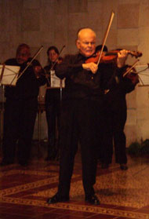
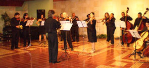
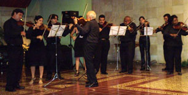

Baudelaire tenía razón: un soneto es la mejor crítica para una obra de arte. Si, según Baudrillard, el arte debe sumar misterio a la vida, volverla aún menos inteligible, ¿por qué el crítico ha de pretender aclarar algo que, de suyo, es puro misterio? Otra obra de arte sería el único comentario válido. Pero no soy poeta. ¿Cómo puedo entonces pretender atrapar con mi rudimentaria razón algo por esencia inapresable? ¿Debo incluso pretenderlo? Sucede que no soy instrumentista, ni siquiera puedo leer una partitura. Mas ello no me impide sentir la música y admirar a quienes parecen vivirla de un modo particularmente intenso. Siempre me ha fascinado la sutileza de la relación cuerpo y espíritu en todo acto de interpretación. Es tremenda la tensión muscular y nerviosa, escondida en rostros concentrados, que deviene tensión espiritual. El músico toca con todo su cuerpo, no solo con aquella parte en contacto con el instrumento. Y con toda su alma. Logra así una alquimia tan perfecta que anula cualquier reduccionista dicotomía.

Ver a Evelio Tieles interpretar obras de Bach y de Vivaldi, prodigios de la sensibilidad barroca, cumbres del arte musical y de toda aventura del espíritu, es en sí mismo una aventura del espíritu. Es tal su energía que no pude menos que permanecer en vilo, sobre todo en aquellos momentos en que tras asomarnos a lo abisal de toda experiencia humana, nos regalara la suavidad y belleza del Cielo: como si este solo se nos mostrara después de viajar al abismo de nosotros mismos. Y todo ello al borde del delirio, o viviendo el arte como éxtasis, éxtasis en el sentido literal de la palabra: estar fuera de sí. Mas por rara transmutación, ese estar fuera de sí es un estar bien adentro.
Dice Ortega y Gasset —uso el presente con toda intención— que la belleza es algo tan tremendo y conmovedor que no podemos, sin peligro para nuestro equilibrio, contemplarla muy a menudo. Con el concierto de Tieles, junto a la Orquesta de Cámara de Camagüey, bajo la batuta del maestro Juan Ramón Orol, entendí como nunca antes esta verdad. He llegado incluso a preguntarme cómo puede Tieles sobrevivir a cada concierto: tal parece que le va la vida en cada acorde.
También entendí lo que afirmara Walter Bejamin sobre el aura de la obra de arte. Ese influjo, esa vibración llegaba en suaves oleadas o en ondas tumultuosas hasta mí, arrobada y temblorosa cual novia adolescente. El aura de la obra de arte: misterio que se nos menoscaba en las reproducciones, útiles para el conocimiento, por supuesto, mas mutiladores de lo mejor del arte.
El concierto, en el salón de protocolo Nicolás Guillén, justo cuando en La Habana iniciaba su segunda mitad el Concierto por la Paz, fue a su modo otro canto a la concordia y a lo mejor del ser humano. Sin multitudinarias aclamaciones, sin apenas aparataje tecnológico, ni gran atención de los medios de prensa —solo la imprescindible—, en Camagüey también se invocó a la paz.
Otro tanto puede decirse del efectuado la noche anterior, en la maltrecha sede de la Sinfónica, cuando el maestro Enrique Pérez Mesa condujo a la Orquesta Sinfónica de Camagüey. Joaquín Clerch fue el solista en el Concierto de Aranjuez, de Joaquín Rodrigo, que me parecía estar oyendo por primera vez. Llega el adagio a tales extremos de desgarradora tristeza que es casi imposible no respirar con alivio con la casi levedad del movimiento final.

También Clerch me fascinó: tan distinto a Tieles y, a la vez, tan igual. También sentí el aura de la música, aunque en un sentido distinto: abrir los ojos era una irremediable caída desde el sueño hasta la realidad del edificio. Las ventanas carcomidas, las manchas de humedad, la fealdad del escenario y el sofocante calor, nada tenían que ver con lo que allí se estaba escuchando.
Sin embargo, en el siguiente concierto de la Sinfónica, el maestro Jorge Rivero Tirado, su director titular, lució molesto desde los primeros acordes de la Sinfonía No. 1 de Brahms, pieza de gran complejidad técnica. Una vez concluido el segundo movimiento, interrumpió el concierto, hecho quizás inédito entre nosotros. Ya había advertido el peligro de una gotera; sin embargo, un temporal de muy distinta naturaleza fue el causante de la suspensión. La orquesta no estuvo a la altura de la obra, hecho lamentable, es cierto; como también lo es que se haya contado con muy poco tiempo para los ensayos, apenas tres días, de un programa exigente, pues incluyó además “La fuerza del destino”, de Verdi, y “Capricho italiano”, de Tchaikovsky, y que el desenlace haya sido frente al público. No es mi intención, ni estoy preparada para ello, analizar el asunto: me siento obligada a mencionarlo por lo asombroso.
No obstante, la música siempre reconforta. A este recuerdo tan desagradable se superponen otros donde esta entusiasta ha aplaudido con ganas. Hace apenas unos días, la Orquesta de Cámara invitó a las flautistas Mónica Benítez Valdivia, Dalila Valero García y a la suiza Antipe da Stella, e interpretó un bellísimo programa que incluyó piezas bien cubanas con arreglos del maestro René Fáez, esta vez en el Centro de Patrimonio, sede habitual de la agrupación. Fue una mañana luminosa, de suavidades y fresco aliento.

La música, reitero, reconforta. Puedo parecer ingenua o demasiado optimista, pero de veras creo que el incidente en la Sinfónica, si es sabiamente analizado y asumido, cosechará buenos trigos, tanto para la agrupación como para nosotros, los entusiastas de la música, un tanto abochornados, pues la vergüenza ajena duele tanto como la propia. Los artistas, como todos, somos puestos a prueba continuamente: el asunto no es solo salir airosos sino recuperarse de las caídas, sobreponerse a la zozobra.
Lamento el súbito cambio del tono de este texto. Ojalá todo fuera asunto de un texto mejor o peor: ¿qué son estas líneas, apresuradas, fieles a su impronta periodística, junto a la enormidad de la tarde con Vivaldi y Bach, el desconsuelo del Concierto de Aranjuez y la vergüenza de algunos músicos tras el concierto interrumpido? ¿Qué son, en fin, junto a las complejidades de la vida?